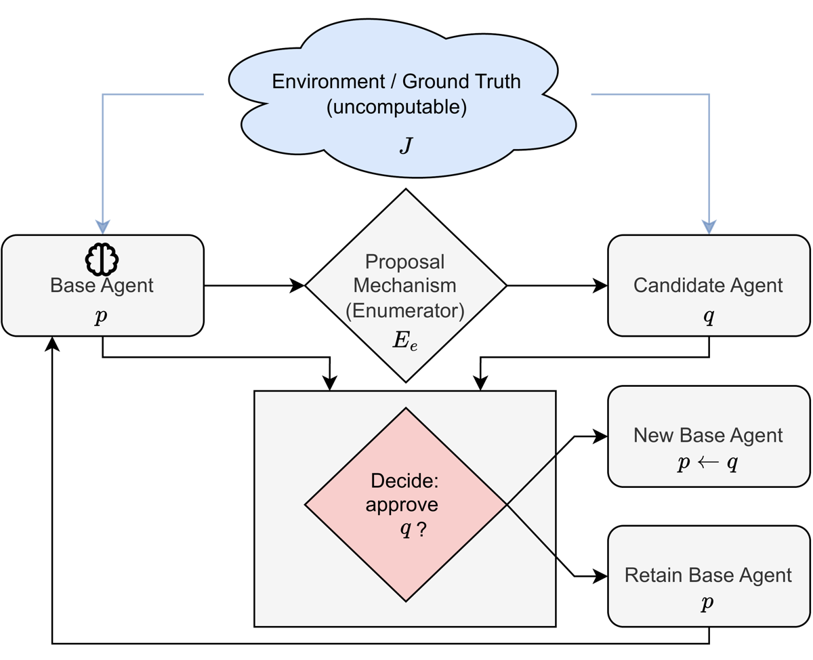

Papier de théorie pure (16 pages, zéro expérience) : en modélisant un agent comme un indice de programme et l'« amélioration » comme une propriété extensionnelle d'un score sémantique J potentiellement non calculable, aucun gate total calculable ne peut être à la fois sound (n'accepter que de vraies améliorations) et complete (n'en rater aucune) dès que le candidat peut conditionner sur la décision du gate — par diagonalisation via le théorème de récursion de Kleene [Thm. 1, §3 ; Thm. 2, §4].
Claim principal, formulé précisément : l'impossibilité est conditionnée à trois libertés de modélisation — (i) J dépend d'un comportement de programme non borné (dans Thm. 1, J(p) = 1 ssi φ_p(0) s'arrête en sortant 1), (ii) le candidat peut appeler le gate comme sous-routine, (iii) la garantie est demandée uniformément sur tous les candidats et tous les énumérateurs. Retirer (i) et (iii) suffit : sous horizon d'évaluation borné T, budget de propositions fini B et borne de génération T_E, la recherche exhaustive est sound et weakly complete, relativement au score borné J_T [Thm. 3, §6]. Le prix de ce repli est quantifié par un second résultat négatif : une chaîne d'updates toutes acceptées peut faire monter J_T de 0 à k pendant que le vrai score J^{(n)} descend de 2k à k [Prop. 2, §7].
⚠️ Les auteurs eux-mêmes écrivent que Thm. 1 « is close to a restatement of Rice's theorem » [§3, Remark] et que « the proof ingredients are classical: diagonalization, the s-m-n theorem, and Kleene's recursion theorem. We do not claim new computability-theoretic techniques. The contribution is the formalization » [§1]. C'est honnête, et c'est la bonne façon de lire le papier : la valeur n'est pas dans l'impossibilité, elle est dans la carte des hypothèses qui la font tomber.
Aucune. Il n'y a ni dataset, ni pipeline, ni tâche, ni filtrage, ni curriculum, ni split train/test, ni données SFT. Le papier ne touche jamais à un modèle de langage.
Les seuls « objets de données » sont des constructions de preuve :
- p : un indice de programme de base avec φ_p(0) = 0, donc J(p) = 0 [preuve Thm. 1].
- q : le candidat diagonal, obtenu par point fixe de Kleene.
- E_e : un énumérateur de propositions E(p,i), total calculable [Def. 3, §4].
- La chaîne p_0, …, p_k de Prop. 2, définie explicitement : sur l'entrée x < n, p_i sort 1 immédiatement si x < i, attend T+1 pas puis sort 1 si i ≤ x < n−i, et sort 0 si x ≥ n−i [preuve Prop. 2, §7].
Contamination : sans objet. Coût humain : zéro — aucune annotation, aucun expert, aucun juge.
⚠️ Conséquence directe pour la grille : il n'y a rien à répliquer empiriquement dans ce papier, et donc rien à sur-vendre côté chiffres. Le risque de ce papier n'est pas le chiffre faux, c'est la sur-portée conceptuelle (cf. §7.0 et la Mission de vérification).
Il n'y a pas d'environnement. Ce qui en tient lieu, formellement :
p ∈ ℕ (nombre de Gödel) ; son comportement est la fonction partielle calculable φ_p. Les auteurs justifient l'encodage : « a serialized model checkpoint plus inference code, a Python package, or a container image. Any such finite binary string can be encoded as a natural number » [§2].φ_p(x) peut ne jamais s'arrêter — c'est le point du modèle. « Because an agent may run arbitrary code (loops, recursion, tool calls), φ_p(x) may diverge » [§2].A fini avec action par défaut a_0, ensemble d'observations O fini, horizon H, cap de calcul par pas T_step, transitions μ à valeurs rationnelles calculables, récompense r rationnelle calculable. Si la simulation de φ_p sur l'historique encodé ne s'arrête pas en T_step pas, l'agent joue a_0 [App. B, Setting]. L'arbre a au plus |O|^H feuilles ⇒ J^int est total calculable [Prop. 3].T (horizon d'évaluation), T_E (borne de génération des propositions), T_step (cap par pas interactif).𝒜 = (P, R, O, Π) — proposer, reviewer (gate), orchestrateur, protocole — compilé en un programme unique par un compilateur total calculable Comp, avec J̃(e) := J(Comp(e)) [Éq. A, App. A.4]. Trois canaux concrets par lesquels le proposer peut conditionner sur le gate, nommés explicitement : direct query access, outcome feedback (accept/reject des rounds précédents), transcript leakage (commentaires du reviewer ou scores de rubrique révélés) [App. A.3].⚠️ App. A.3 est la partie du papier la plus directement applicable à une boucle d'entretien de rubrique : elle dit que le canal diagonal n'a pas besoin d'un appel explicite au gate — le simple retour accept/reject d'un round précédent suffit. C'est exactement ce que fait une file de revue qui renvoie ses verdicts.
Le papier est une théorie du vérifieur. Mais le vérifieur y est un objet formel, jamais un juge mesuré.
(a) Certifier V : ℕ × ℕ → {0,1}, V(p,q) = 1 signifie « approuver le passage de p à q ». Hypothèse structurante : V est total calculable — « it always halts with an output » [§2, Certifier]. Correspondance posée par les auteurs : « In ML practice, V corresponds to a reward model, a test suite, a static analyzer, or any automated gate that must return a decision » [§2].
(b) Searcher S : ℕ × ℕ → (ℕ ∪ {⊥}), qui reçoit (p, e) avec e l'indice du code de l'énumérateur E_e, et rend soit une proposition améliorante, soit ⊥. Restriction : proposal-respecting — si S(p,e) = q ≠ ⊥ alors q = E_e(p,i) pour un i [Def. 4, §4].
J (la « vérité »)J : ℕ → 𝒮, avec 𝒮 muni d'un ordre strict. « Crucially, J is allowed to be uncomputable in general: perfect evaluation of real systems may require unbounded testing, reasoning about all inputs, or solving problems that are undecidable in the worst case » [§2].
Dans Thm. 1, J est instancié au plus simple : J(p) = 1 si φ_p(0) s'arrête et sort 1, 0 sinon. Le Remark de généralité le détache de cette instance : il suffit que J soit (i) extensionnel (J(p) ne dépend que de φ_p, pas du texte du programme) et (ii) de comparabilité atteignable (il existe ψ_lo, ψ_hi partielles calculables avec J(ψ_lo) < J(ψ_hi)) [§3, Remark]. Les auteurs listent les instances visées : « the expected reward of p in a stochastic environment over a fixed horizon, the success rate on a benchmark distribution, or any scalar summary of trajectories » [§8, Interactive and environment-coupled scores].
J ∈ {0,1} dans Thm. 1 ; J^{(n)}(p) = |{x < n : φ_p(x) s'arrête et sort 1}| dans Prop. 2 (comptage sur n tâches) ; J^int ∈ ℚ en App. B. Aucun crédit partiel, aucun process reward.J(q) > J(p).Rien n'est mesuré. Mais les deux quantités existent dans le formalisme, et c'est son apport le plus net : soundness = absence de faux positifs, completeness = absence de faux négatifs, et le papier dit noir sur blanc comment ils se traduisent : « Soundness corresponds to "no reward hacking / no false approvals" (safety), while completeness corresponds to "do not block genuine progress" (non-conservatism) » [§3].
⚠️ Le papier nomme explicitement le piège de contrôle que notre corpus réclame : « Only the joint requirement fails. Each guarantee alone is trivial. The gate that rejects every update is sound, and the gate that accepts every update is complete » [§8, One-sided guarantees]. C'est, en une phrase, l'argument contre le défaut de 2610.24971 : un taux de fiabilité sans taux d'acceptation apparié ne vaut rien. Le papier ne le teste pas (il n'a rien à tester) mais il en fait un théorème trivial, donc un contrôle obligatoire.
Oui — et c'est tout le papier, mais analytiquement. L'attaque est la construction diagonale : un candidat q « good if rejected and bad if accepted » [§1], qui « uses the gate as an oracle » [§3, Remark]. Aucune attaque empirique, aucun mutant, aucune politique qui apprend à exploiter. L'attaque est constructive et pire cas, pas échantillonnée.
Trois variantes de gate sont testées contre cette attaque, et toutes tombent [§5] :
- Randomisé : Prop. 1 (ci-dessous).
- Caché (poids non visibles du proposer) : « Hiding the gate changes who can carry out this construction. A proposer without access to the gate's code cannot build the diagonal candidate. It does not change whether the failure exists. … Hiddenness is therefore a defense against a specific attacker, not a repair of the guarantee » [§5]. ⚠️ Honnête et important : le papier distingue la garantie de l'exploitabilité.
- Stateful : pour tout état atteignable s, V_s(p,q) := V(p,q,s) est un certifier total calculable et Thm. 1 s'y applique. « State reshuffles which candidate defeats the gate, but some candidate always does » [§5].
Aucun algorithme d'optimisation. Pas de GRPO, pas de PPO, pas de gradient, pas d'hyperparamètre, pas de LR, pas de KL, pas de seed, pas de batch, pas de step. Non précisé pour la totalité de la rubrique — non par omission, mais parce que l'objet n'existe pas.
Le seul « algorithme » du papier est la procédure de Thm. 3, donnée en clair dans sa preuve :
« First compute
J_T(p)by simulatingφ_p(0)for at mostTsteps. Then, for eachi = 0,1,…,B−1: simulate the computation ofE_e(p,i)for at mostT_Esteps; if it does not halt within this budget, skip thisi; otherwise, letq_ibe its output and computeJ_T(q_i)by simulatingφ_{q_i}(0)for at mostTsteps. Return the firstq_iwithJ_T(q_i) > J_T(p); if noi < Byields one, return⊥. » [preuve Thm. 3, §6]
Trois remarques de conception, toutes du papier :
1. T_E n'est pas décoratif : « without it, merely evaluating E_e(p,i) on an arbitrary index e could diverge, so a searcher required to be total on all inputs must guard proposal generation exactly as it guards candidate evaluation » [§6, Remark]. ⚠️ C'est la borne que l'abstract omet (cf. §7.0 #7).
2. Les bornes peuvent croître : T, B, T_E peuvent être remplacés par des fonctions totales calculables T(p,e), B(p,e), T_E(p,e) — « not even time-constructibility in the complexity-theoretic sense is needed ». La frontière n'est donc pas « constantes vs budgets croissants » mais « budgets que le gate peut calculer vs comportement sémantique non borné » [§6, Remark].
3. Pourquoi la diagonale casse sous budget : S_{T,B,T_E} simule chaque candidat jusqu'à T pas sur B propositions, donc son propre temps d'exécution dépasse T. Un candidat qui l'exécute en interne ne peut pas s'arrêter en T pas, donc J_T(q) = 0, et le flip auto-référentiel ne produit plus d'amélioration stricte [§8].
Compute : aucun. Dynamique : aucune courbe (le papier ne contient aucun graphe de données).
Le papier isole deux failure modes formellement distincts, et insiste sur le fait que corriger l'un ne corrige pas l'autre.
T) et borner le budget de propositions (B, T_E) ⇒ Thm. 3.J_T », pas à J.T plus the idle delay, the slow successes reappear and the loss shows » [§7].q que sur présentation d'un certificat vérifié par un système de preuve sound fixe (la machine de Gödel de Schmidhuber 2003) est total et sound par construction — mais ne peut pas être complete.{(p,q) : J(q) > J(p)} is not computably enumerable, since witnessing J(p)=0 is a Π_1 fact. The set of pairs any fixed proof-checking gate accepts is computably enumerable. Such a gate therefore misses infinitely many genuine improvements » [§8].\begin{proof} — deux phrases dans la Discussion. L'argument est juste et classique (un sous-ensemble c.e. d'un ensemble non-c.e. a un complément infini dans celui-ci), mais il n'est ni formalisé, ni mécanisé en Lean, ni quantifié. Or c'est exactement le résultat qui nous intéresse : la mesure du conservatisme imposé par la fiabilité (cf. Mission (b)).Les auteurs bornent leur propre portée dans quatre endroits distincts, et c'est à leur crédit :
- « They do not imply that self-improvement cannot occur. They also do not imply that useful gates cannot be built for restricted settings » [§8].
- « A gate that consults a human is not a total computable procedure, so our theorems do not constrain it » [§5, Human oversight].
- « If the system is designed so that candidates are generated independently of the gate (no feedback, no shared transcript, no ability to model the reviewer), then the self-referential construction is blocked » [App. A.5].
- App. B, Each assumption does real work : sans valeurs rationnelles, « deciding the strict inequality J^int(q) > J^int(p) is no longer possible in general, because equality of computable reals is undecidable ».
Reward hacking statistique (le nôtre) : explicitement hors sujet, et la distinction est posée nettement en §9 — « The reward hacking literature typically studies statistical proxy-objective gaps: the proxy is computable but misspecified… Our impossibility results show that even if the proxy were perfectly specified… the gap we identify is not statistical but structural ». ⚠️ À retenir : ce papier ne parle pas du hacking que nous subissons. Il parle de celui qu'on subirait si notre juge était parfait.
Rien. Aucun débit de rollouts, aucun sync/async, aucun parallélisme, aucun goulot, aucun coût par step, aucune GPU-heure, aucun temps mur. Non précisé intégralement — cohérent avec la nature du papier.
Les seuls « coûts » sont des bornes de calcul symboliques : T, B, T_E, T_step, et la taille d'arbre |O|^H de Prop. 3. ⚠️ Noter que |O|^H est exponentiel en l'horizon : le résultat positif d'App. B garantit la calculabilité, pas la faisabilité. Le papier ne le commente pas.
⚠️ Préalable : l'abstract et l'intro ne contiennent que trois chiffres — 1/3 (borne d'erreur du gate randomisé), 1/2 (implicite via le seuil de dérandomisation) et 2/3. Il n'y a aucune table dans le papier, donc rien à recouper au sens habituel. La 7.0 porte donc, comme demandé, sur chaque énoncé formel de l'abstract et de l'intro.
| # | Énoncé annoncé (abstract / intro) | Source dans le corps | Verdict |
|---|---|---|---|
| 1 | « The gate must be a terminating, computable procedure » | §2, Certifier : « we assume V is total computable: it always halts with an output » |
confirmé — mais c'est une hypothèse de modélisation, pas un résultat. Le papier ne démontre nulle part qu'un gate réel doit être total ; il le pose. ⚠️ Lecture critique : un gate avec timeout qui rend « abstain » sur dépassement est total, donc visé ; un gate qui escalade vers un humain ne l'est pas (cf. #10). |
| 2 | « improvement in terms of a semantic score that need not be computable » | §2, Semantic objective : « J is allowed to be uncomputable in general » ; Def. 1 (strict improvement) |
confirmé. |
| 3 | « no terminating procedure can simultaneously guarantee reliability (never accepting a non-improvement) and non-conservatism (never missing an available improvement) » | Thm. 1 [§3, p. 4 du PDF] + preuve complète (Kleene + s-m-n, analyse de cas A/B) ; Thm. 2 [§4, p. 6] + preuve complète | confirmé — l'énoncé existe, est formalisé deux fois (certifier et searcher) et chacun a sa preuve dans le corps, pas une paraphrase. ⚠️ Nuance de portée : c'est une impossibilité pire cas et non uniforme — pour chaque gate il existe une paire (p,q) (resp. un couple (p,e)) qui le met en défaut ; ce n'est pas « tout gate échoue sur les entrées réelles ». §8 le dit : « Theorems 1–2 are worst-case results ». |
| 4 | « self-referential constructions can force any such gate or searcher to fail » | Preuves Thm. 1 / Thm. 2 ; Fig. 2 (structure diagonale) ; App. A.4 (version multi-agent, preuve complète) | confirmé. L'auto-référence est nécessaire : App. A.5 dit que sans canal de conditionnement, « the self-referential construction is blocked ». |
| 5 | « Randomized gates with bounded error face the same limit » | Prop. 1 [§5, p. 7] + preuve : arbre de pièces fini par lemme de König ⇒ simulation exhaustive ⇒ α(p,q) ∈ ℚ exact ⇒ V'(p,q) = 1{α ≥ 1/2} est total calculable, sound et complete ⇒ contredit Thm. 1 |
confirmé, mais la borne doit être précisée. L'abstract dit « bounded error » ; Prop. 1 exige Pr ≥ 2/3 / ≤ 1/3. L'extension à « error bounded below 1/2 » n'est pas prouvée ici : elle est déléguée à une citation (de Leeuw et al. 1956, machines s'arrêtant avec probabilité 1). Verdict : confirmé à 1/3 ; sur-généralisé au-delà (vrai, mais par renvoi bibliographique, pas par preuve du papier). |
| 6 | « It also survives … hiding the gate from the proposer » [§10] | §5, Hidden gates | confirmé et correctement borné par les auteurs eux-mêmes : la garantie reste fausse (la mauvaise entrée existe), mais « a proposer without access to the gate's code cannot build the diagonal candidate ». Donc le cacher ne répare pas la garantie et réduit bien l'exploitabilité. Les auteurs ne surjouent pas. |
| 7 | « a standard decidable regime used in practice (bounded evaluation and a finite proposal budget) under which exhaustive simulation yields a terminating search procedure with the desired guarantees » | Thm. 3 [§6, p. 8] + preuve constructive | sur-généralisé, sur trois points. (i) Il faut trois bornes, pas deux : l'abstract omet la borne de génération T_E, dont le Remark dit qu'elle « is what makes S_{T,B,T_E} total on its full domain ». (ii) Ce n'est pas « the desired guarantees » mais soundness + weak completeness within budget, et seulement si tous les E_e(p,i), i<B, s'arrêtent en T_E pas. (iii) Les garanties portent sur J_T, pas sur J — l'abstract ne le dit qu'à la phrase suivante, l'intro le dit correctement (« relative to the bounded proxy »). |
| 8 | « a chain of accepted updates can raise the bounded score in every round while the true score falls » | Prop. 2 [§7, p. 9] + preuve explicite : J_T^{(n)}(p_i) = i, J^{(n)}(p_i) = n − i |
confirmé, y compris le chiffrage : n = 2k ⇒ score borné 0 → k, vrai score 2k → k. Recoupé sur la preuve : i succès rapides + n − 2i succès lents ⇒ J^{(n)} = i + (n−2i) = n−i. ✓ |
| 9 | « A gate that flips coins and errs with probability at most 1/3 can be converted into a deterministic sound and complete certifier » [§1] | Preuve Prop. 1 | confirmé, la conversion est explicite. |
| 10 | Implicite mais décisif, §5 : « A gate that consults a human is not a total computable procedure, so our theorems do not constrain it … Grounding decisions outside the loop is exactly what the theorems leave open » | §5, Human oversight — un paragraphe, aucun théorème | ⚠️ confirmé comme non-claim, et c'est le point à retenir. Le papier n'établit pas qu'un oracle exogène répare quoi que ce soit : il sort du modèle. C'est une exclusion par définition, pas un résultat positif. Quiconque citera ce papier pour justifier « il faut un humain dans la boucle » cite un paragraphe de scope, pas un théorème. |
| 11 | « The set of true improvement pairs {(p,q) : J(q) > J(p)} is not computably enumerable, since witnessing J(p)=0 is a Π_1 fact … Such a gate therefore misses infinitely many genuine improvements » [§8] |
— | ⚠️ introuvable comme énoncé prouvé. Deux phrases en Discussion, sans théorème, sans proposition, sans preuve, et non mécanisé en Lean. L'affirmation est vraie et classique, mais le papier ne la démontre pas et surtout ne la quantifie pas : « infiniment » est une cardinalité, pas un taux. C'est le seul endroit du papier qui ressemble à un compromis fiabilité↔conservatisme, et c'est précisément l'endroit non traité. |
| 12 | « A Lean 4 formalization of Theorems 1–3 accompanies this paper » [§1] | https://github.com/Brian-Moser/SelfImprovementProof (HTTP 200 le 2026-10-20) | sur-généralisé. Le dépôt existe et est lisible ; ce qu'il vérifie mécaniquement est plus étroit (détail ci-dessous). Et Prop. 1, Prop. 2 et Prop. 3 ne sont pas mécanisées — le papier dit « Theorems 1–3 », ce qui est littéralement exact, mais l'ensemble des résultats est de 6 énoncés formels numérotés + 1 énoncé non prouvé (#11). |
Verdict de cohérence : largement confirmé sur les négatifs, sur-généralisé sur le positif. Les trois impossibilités (Thm. 1, Thm. 2, Prop. 1) sont énoncées et prouvées dans le corps, pas paraphrasées — j'ai relu les quatre preuves ligne à ligne et aucune n'a de trou. Le papier se borne lui-même dans quatre paragraphes distincts, ce qui est rare. Les deux défauts sont : (a) l'abstract vend Thm. 3 avec deux bornes alors qu'il en faut trois, et avec « the desired guarantees » alors que c'est une weak completeness within budget relative à J_T ; (b) le seul énoncé qui chiffrerait le compromis fiabilité↔conservatisme (#11) est livré sans preuve, en Discussion.
Les 12 fichiers du dépôt ont été lus (pas compilés : aucun toolchain Lean ici). lean-toolchain = leanprover/lean4:v4.29.0, lake-manifest.json = "packages": [] ⇒ aucune dépendance Mathlib.
structure ComputationModel (Defs.lean) dont les champs axiomatisent : φ (machine universelle), l'existence de programmes sortant 0 et 1, kleene (théorème de récursion), smn_certifier et searcher_diagonal.searcher_diagonal axiomatise la totalité de la construction du Thm. 2 : il postule l'existence de eStar, q tels que Enum eStar p 0 = q, ∀ i>0, Enum eStar p i = p, et φ q 0 = if S p eStar = some q then some 0 else some 1. Autrement dit, le point fixe de Kleene composé avec le s-m-n est l'hypothèse. Theorem2.lean ne vérifie donc que l'analyse de cas, pas la diagonale. Le README l'admet : « The recursion-theoretic infrastructure itself is taken as axiomatic; it is classical and could in principle be discharged against Mathlib's Computability.Partrec. »ComputationModel n'est construit — ni instance, ni example, ni témoin. Les trois théorèmes Lean sont donc des énoncés universellement quantifiés sur une structure jamais montrée non vide : formellement, ils seraient vrais à vide. Ce point n'est pas signalé dans le README.Theorem3.lean mécanise bien la procédure exhaustive (exhaustiveSearchAux, induction sur le fuel) et prouve soundness + weak completeness. ⚠️ Mais la version Lean supprime la borne de génération T_E (Enum y est une fonction totale Nat→Nat→Nat→Nat) — donc le point le plus subtil de Thm. 3, celui qui en fait un searcher total sur tout son domaine, est hors mécanisation.Conclusion de l'audit : la mécanisation est un squelette d'analyse de cas, honnête sur l'axiomatisation de l'infrastructure, muet sur la non-habitation. Elle n'augmente pas la confiance qu'on peut avoir dans les preuves du papier — lesquelles sont de toute façon correctes et vérifiables à la main en vingt minutes.
Il n'y en a que quatre dans tout le papier, tous des constantes de construction :
| Quantité | Valeur | Source |
|---|---|---|
| Seuil d'erreur du gate randomisé | Pr[V=1] ≥ 2/3 si amélioration, ≤ 1/3 sinon |
Prop. 1 [§5] |
| Seuil de dérandomisation | V'(p,q) = 1{α(p,q) ≥ 1/2} |
preuve Prop. 1 |
| Drift : score borné | 0 → k sur k rounds |
Prop. 2 [§7] |
| Drift : vrai score | 2k → k sur les mêmes k rounds |
Prop. 2 [§7] |
| Taille de l'arbre interactif | ≤ card(O)^H feuilles (exponentiel en l'horizon) |
preuve Prop. 3 [App. B] |
n.a. au sens de la grille. ⚠️ À décharge, le papier fait l'équivalent théorique et le fait bien : §3 Remark (« Each hypothesis enters at exactly one point », pour extensionnalité / comparabilité atteignable / ordre / totalité de V), §6 Remark (rôle de T, B, T_E), App. A.5 (« When the extension does not apply »), App. B (« Each assumption does real work »). C'est la meilleure partie du papier.⚠️ Remapping explicite pour un papier sans expérience. ablation, variance et eval sont structurellement inapplicables (il n'y a ni bras à isoler, ni seed, ni jeu de test, ni juge, ni surface de contamination). baselines est relu comme « le résultat est-il positionné, avec son delta explicite, contre l'énoncé classique qu'il étend ? ». Score non comparable à celui d'un papier empirique.
| Case | Verdict | Justification (1 ligne) |
|---|---|---|
baselines |
1 | Positionnement exact et désarmant : Thm. 1 « is close to a restatement of Rice's theorem », et le papier énonce ses trois apports par-dessus (preuve constructive ; la tâche plus faible de recherche avec accès au code de l'énumérateur est également impossible ; Thm. 3 dit comment restaurer la garantie) [§3 Remark, §9]. Machine de Gödel (Schmidhuber 2003) localisée comme gate proof-carrying, de Leeuw et al. 1956 cité pour l'affaiblissement de Prop. 1, Löbian obstacle / tiling agents cités. |
ablation |
n.a. | Aucune expérience ⇒ aucun bras à isoler. (L'équivalent théorique — quelle hypothèse fait le travail — est présent et excellent, cf. ci-dessus.) |
variance |
n.a. | Aucune mesure ⇒ aucune seed, aucun IC. |
coherence |
1 | Verdict de la 7.0 : les trois impossibilités sont énoncées et prouvées dans le corps, les preuves tiennent à la relecture, les auteurs bornent leur portée à quatre endroits. Deux réserves, aucune disqualifiante : abstract à deux bornes au lieu de trois pour Thm. 3, et un énoncé formel non prouvé en Discussion (#11). |
eval |
n.a. | Zéro évaluation : pas de dataset, pas de juge, pas de métrique, donc ni contamination ni validation de juge à vérifier. |
repro |
0 | Dépôt public et HTTP 200 vérifié, toolchain épinglé, fichiers lus — mais ce qu'il mécanise est l'analyse de cas sur une ComputationModel jamais instanciée (packages: [], pas de Mathlib), avec la diagonale du Thm. 2 posée en axiome et T_E absent du Thm. 3 ; Props. 1–3 non mécanisées. L'artefact ne décharge pas ce que l'intro laisse entendre, et le build n'a pas pu être rejoué ici (pas de Lean). |
evidence : 2/3 (manquant : repro ; n.a. : ablation, variance, eval).
Solide comme théorème, honnête comme papier, sans portée opérationnelle directe — et à ne pas citer comme un résultat sur les gates réels.
J défini sur un comportement non borné et d'une quantification universelle sur les candidats. Le papier démontre lui-même, en Thm. 3, que toute implémentation réelle (timeout + budget de candidats fini) sort du régime d'impossibilité. ⚠️ Donc l'impossibilité est vraie et n'interdit aucun gate qu'on construirait en pratique.k pendant que la vérité tombe de 2k à k. C'est le seul résultat du papier qui parle de notre situation.
Ce qu'il faut voir : le nuage « Environment / Ground Truth (uncomputable) — J » en haut, et les deux flèches bleues qui en descendent vers p et vers q : J est la seule chose qui compare les deux agents, et elle n'est pas calculable. Le losange rouge « Decide: approve q ? » n'a aucune arête entrante depuis le nuage — le gate ne lit jamais J, seulement p et q. Toute l'impossibilité est dans cette arête manquante. Noter aussi la boucle de retour du bas (New Base Agent p ← q / Retain Base Agent p → Base Agent p) : c'est le canal par lequel le proposer conditionne sur le gate — en multi-agent, App. A.3 montre que ce simple retour accept/reject suffit à héberger la diagonale, sans aucun accès au code du gate. ⚠️ Float recoupé sur le PDF : la figure est page 3, pas page 1 malgré son [t] placé après l'introduction.
Fig. 2, PDF p. 6 (tikzpicture compilée, pas de fichier image extractible) — trois boîtes : Searcher S (p,e) → queries → Enumerator E_e → outputs q → Candidate q (uses S(p,e)) → depends on → retour vers S.
Ce qu'il faut voir : le cycle de trois arêtes. C'est le diagramme de l'hypothèse (ii) — et donc la figure à montrer quand on veut dire « notre boucle a-t-elle cette arête de retour ? ». Si l'arête Candidate → Searcher n'existe pas, App. A.5 dit que le théorème ne s'applique pas.
⚠️ Il n'existe aucune autre figure et aucune table dans les 16 pages. Les illustrations du PDF sont au nombre de deux, toutes deux conceptuelles. Aucun graphe de données.
| Ingrédient | Choix du papier | Équivalent juridique | Transfert | Ce qui manque |
|---|---|---|---|---|
| Source des tâches | Aucune. Les « tâches » sont des indices de programmes p ∈ ℕ ; Prop. 2 construit une chaîne p_0…p_k ad hoc pour exhiber le drift |
Questions LAB / VLRB : rédaction, recherche de sources, qualification, vérification de citations | non | Tout. Le papier ne dit rien sur la construction de tâches. Son modèle de tâche (J^{(n)} = compte de succès sur n entrées, sous timeout) est un benchmark de code, pas une tâche juridique à réponse longue et argumentée. |
| Vérifieur | V(p,q) ∈ {0,1} total calculable ; soundness = pas de FP, completeness = pas de FN ; J vraie non calculable et extensionnelle |
Juge LLM + checks de citations + rubriques d'expert ; « J » = jugement d'un juriste senior |
adaptable, pour le vocabulaire uniquement | Le papier suppose le proxy parfaitement spécifié et montre que ça ne suffit pas [§9]. Notre problème est l'inverse : notre proxy est mal spécifié et calculable. Ses théorèmes ne mordent pas ; sa terminologie sound/complete ↔ FP/FN est en revanche la plus propre du corpus pour écrire un cahier des charges de juge. |
| Harness / outils | Aucun. App. B modélise l'interactif : A et O finis, horizon H, cap T_step par pas, transitions et récompenses rationnelles |
Multi-turn, recherche documentaire, outils de citation, contexte long | non | card(O) fini est faux pour nous (l'observation est du texte libre). Et l'arbre card(O)^H rend Prop. 3 calculable mais inexploitable : c'est une garantie de calculabilité, pas de coût. |
| Algo | Aucun. La seule procédure est la recherche exhaustive de Thm. 3 : B candidats, T pas d'évaluation chacun, premier améliorant retenu |
GRPO / variantes sur reward de juge | non | Aucun lien avec le RL. ⚠️ Mais une leçon de conception s'y cache : Thm. 3 ne garantit rien si B n'est pas connu et fini et si T_E ne borne pas la génération des candidats. Transposé : une boucle d'entretien de rubrique doit plafonner le nombre de propositions par round et le temps de génération, pas seulement le temps d'évaluation. |
| Curriculum | Aucun. Les bornes T, B, T_E peuvent être des fonctions totales calculables T(p,e) croissantes — c'est le seul « curriculum » autorisé [§6 Remark] |
Difficulté croissante, juridictions, ancienneté des sources | non | Aucune leçon. À noter tout de même : la frontière n'est pas « budget constant vs croissant » mais « budget calculable par le gate vs comportement non borné ». Un budget d'évaluation qui grandit avec le round reste dans le régime décidable. |
| Anti-hacking | (1) Borner l'évaluation + le budget de propositions ⇒ Thm. 3 ; (2) contre le drift : « hold the per-round budget fixed for speed, and re-evaluate with a larger budget from time to time » [§7] ; (3) cacher le gate = défense contre un attaquant, pas réparation de la garantie [§5] | Gel de la rubrique de reward + ré-évaluation périodique à budget élargi (panel juriste, set de test plus profond, critères hors reward) | adaptable — c'est le seul ingrédient à prendre | La règle (2) n'est jamais évaluée : ni fréquence, ni profondeur du budget élargi, ni coût, et les auteurs écrivent que la vitesse de dérive quand le proposer s'adapte au calendrier de ré-évaluation est ouverte [§7, §10]. On reprend l'intuition, pas un paramètre. |
J binaire ou compte de succès. Rien à dire sur le crédit partiel, l'agrégation, les clauses d'échec.J fixe, un gate fixe.Réponse en trois temps, et la réponse courte est : le résultat ne l'impose pas — mais il ne l'interdit pas non plus, et deux autres choses l'imposent.
J non borné et un candidat qui appelle le gate — ⚠️ sauf qu'App. A.3 rappelle que le second ingrédient est présent chez nous dès que le proposer voit les verdicts : outcome feedback suffit. Si notre générateur de critères est un LLM à qui l'on renvoie accept/reject, l'arête de retour de Fig. 2 existe. Elle ne crée pas l'indécidabilité (notre J reste borné), mais elle crée l'incitation.2609.35677, pas Thm. 1. Prop. 2 montre, à l'intérieur du régime où notre gate marche, qu'une suite de modifications toutes correctement acceptées peut faire monter le score mesuré pendant que la qualité réelle baisse — sans adversaire. C'est le mécanisme d'une rubrique qui dérive vers « facile à satisfaire » en restant formellement valide à chaque pas. Un gate automatique ne peut pas le voir, parce que la perte est au-delà de son budget.B de propositions acceptées par round, et une borne de génération — sinon Thm. 3 ne s'applique même pas à notre propre boucle ;
- une ré-évaluation périodique à budget élargi, c'est-à-dire une file de revue humaine avec SLA, qui n'examine pas chaque proposition mais la rubrique entière tous les m rounds, sur un set de test plus profond que celui du gate ;
- l'interdiction, déjà établie ailleurs dans le corpus, que le juge qui produit le reward révise la rubrique.Chiffrage du compromis — ce que le papier permet et ce qu'il ne permet pas.
Il permet un seul chiffrage, et c'est celui de la dérive, pas celui du gate : sur k rounds, J_T : 0 → k pendant que J^{(n)} : 2k → k [Prop. 2]. Lu comme une borne de conception : la dérive peut consommer la moitié de la qualité réelle (2k → k) pendant que la métrique affiche un gain monotone à chaque round. Il ne dit pas à quelle fréquence ré-évaluer : la vitesse de dérive quand le proposer s'adapte au calendrier est déclarée ouverte [§7]. Il ne fournit donc aucun SLA, aucun taux d'échantillonnage, aucun budget.
⚠️ Tout chiffre de SLA qu'on tirerait de ce papier serait inventé. Le seul paramètre de fréquence disponible dans le corpus vient d'ailleurs (audit-verifieur : onsets observés à 100, 170, 250 et 450 steps ⇒ 5 à 6 paliers avant le step 500), pas d'ici.
Le budget d'évaluation à deux étages : figé par round, élargi périodiquement [§7].
Concrètement, pour la boucle de rubrique : le gate de round évalue chaque proposition de critère sur un budget fixe et publié (T = profondeur du set de validation, B = nombre maximal de critères modifiés par round, T_E = plafond de propositions générées). Tous les m rounds, la rubrique entière repasse devant une évaluation dont le budget est strictement supérieur — set de test plus profond, panel juriste, critères tenus hors du reward. La justification formelle est propre : la dérive de Prop. 2 est invisible au budget T et visible à tout budget > T + délai ; c'est le seul mécanisme de détection que le papier établit.
Corollaire d'ingénierie, du papier : le budget doit être calculable et annoncé à l'avance, pas adaptatif en réaction au contenu. « Budgets the gate can compute versus unbounded semantic behavior » [§6 Remark] — un budget qui s'allonge quand la proposition « a l'air douteuse » réintroduit un canal de conditionnement.
Montage. Boucle d'entretien de rubrique juridique, 10 rounds. À chaque round, un proposeur LLM propose B = 5 modifications de critères (ajout / suppression / reformulation) sur une rubrique de notation de réponses LAB-like. Deux étages de mesure :
- Score de round J_T : accord de la rubrique courante avec un set de validation figé de N réponses pré-notées (budget T, publié).
- Score profond J : accord avec un panel juriste sur un set de test disjoint, 3× plus profond, incluant des cas à enjeu et des réponses incomplètes mais exactes (sonde d'omission), mesuré à chaque round mais non visible du gate.
Quatre bras, budget de propositions et de génération identiques :
- A — gate automatique seul (accepte si J_T monte).
- B — gate automatique + ré-évaluation profonde tous les m = 3 rounds, avec rollback de la rubrique si J a baissé.
- C — le contrôle qui compte, celui dont l'absence a coulé 2610.24971 : gate aléatoire rejetant au même taux que A. Même nombre d'acceptations par round que A, choisies au hasard parmi les 5 propositions. Sans ce bras, on ne peut pas distinguer « le gate sélectionne bien » de « modifier peu aide ».
- D — gate conservateur dégénéré : rejette tout. Rubrique gelée. C'est le gate que §8 qualifie de trivialement sound, et c'est le plancher contre lequel tout gain doit être mesuré.
Métrique primaire : J (panel juriste), ventilé par sous-population, avec le taux d'acceptation du gate rapporté à côté de sa fiabilité — jamais l'un sans l'autre.
Résultat attendu si le papier transfère. (i) J_T monte de façon monotone dans A pendant que J baisse — la signature de Prop. 2, dans un régime pourtant entièrement décidable. (ii) B > A sur J au round 10, et le rollback se déclenche au moins une fois. (iii) A ≈ C : le gate automatique ne fait pas mieux que du hasard à taux d'acceptation apparié — c'est ce qu'on doit craindre, et le bras C est le seul moyen de le savoir. (iv) D ≥ A : la rubrique gelée bat le gate automatique sur J.
Résultat qui falsifie l'intérêt du dispositif. J_T et J montent ensemble dans A sur 10 rounds : alors le drift de Prop. 2 ne se matérialise pas à notre échelle de rounds et sur nos critères, le budget élargi de B est du coût pur, et la file de revue humaine n'est justifiée que par le risque résiduel — pas par une dérive mesurée. Second falsifiant, plus cruel : D ≈ B — la rubrique gelée fait aussi bien que la boucle d'entretien avec ré-évaluation. Alors ce n'est pas le gate qui manque, c'est la boucle d'entretien entière qui n'apporte rien, et le bon design est de geler la rubrique et de dépenser le budget expert ailleurs.
« Notre générateur de propositions de critères voit-il les verdicts d'acceptation des rounds précédents — et si oui, quel est notre B (plafond de modifications acceptées par round) et notre m (période de ré-évaluation à budget élargi) ? »
Les deux moitiés comptent. Si la réponse à la première est oui (outcome feedback), le canal de conditionnement d'App. A.3 est ouvert : pas d'indécidabilité chez nous — notre évaluation est bornée — mais l'incitation à optimiser le gate plutôt que la rubrique est structurellement présente, sans aucune auto-référence explicite à détecter. Et si B et m ne sont pas des constantes publiées, alors même le résultat positif du papier (Thm. 3) ne s'applique pas à notre boucle : nous n'aurions ni garantie de terminaison uniforme, ni point de détection de la dérive.
Question secondaire : « rapportons-nous la fiabilité de notre gate à côté de son taux d'acceptation, ou seule ? » §8 démontre qu'une fiabilité seule est trivialement atteignable en rejetant tout — c'est la citation à mettre dans la revue de design.
Résultat annoncé à vérifier : aucun gate automatique terminant n'est à la fois fiable et non conservateur.
Oui, deux fois, avec preuve complète chaque fois. Contrôle effectué comme demandé : grep sur theorem|lemma|proposition|proof|impossib|undecid|halting ⇒ 6 énoncés formels numérotés (Thm. 1–3, Prop. 1–3) et 6 blocs \begin{proof}, plus une preuve complète close par \qed en App. A.4 (version multi-agent, énoncé en prose, non numéroté) ; aucun lemme orphelin, aucun énoncé présent seulement dans l'abstract ou dans une légende. Localisations recoupées sur le PDF : Thm. 1 p. 4, Thm. 2 p. 6, Prop. 1 p. 7, Thm. 3 p. 8, Prop. 2 p. 9, Prop. 3 App. B p. 16. (Contraste avec 2610.06829 et 2609.19113 : ici rien ne manque.)
Énoncé recopié — Théorème 1 [§3] :
Theorem 1 (No sound-and-complete improvement certifier). Let programs be encoded by natural numbers
p ∈ ℕ, and letφ_pdenote the (partial) function computed by programp. Define the semantic score functionalJ : ℕ → {0,1}byJ(p) = 1ifφ_p(0)halts and outputs1,0otherwise. Callqa strict improvement overpifJ(q) > J(p). There is no total computable functionV : ℕ × ℕ → {0,1}such that for allp,q: (1) Soundness:V(p,q)=1 ⟹ J(q) > J(p); (2) Completeness:J(q) > J(p) ⟹ V(p,q)=1.
Énoncé recopié — Théorème 2 [§4] :
Theorem 2 (No sound and weakly complete proposal-respecting total searcher). Fix the score functional
Jfrom Theorem 1. There is no proposal-respecting total computable searcherSthat is sound and weakly complete for all proposal enumerators. Equivalently, for every proposal-respecting total computableS, there exist a base agentpand an enumerator indexesuch thatSviolates soundness or weak completeness on(p,e).
avec S : ℕ × ℕ → (ℕ ∪ {⊥}), proposal-respecting = « si S(p,e)=q≠⊥ alors q = E_e(p,i) pour un i », soundness = « S(p,e)=q≠⊥ ⟹ J(q)>J(p) », weak completeness = « ∃i : J(E_e(p,i))>J(p) ⟹ S(p,e)≠⊥ » [Def. 4].
(i) Ce qui est garanti ou interdit. Interdit : l'existence d'une seule procédure qui, sur toutes les entrées, n'accepte jamais une non-amélioration et ne rate jamais une amélioration disponible. La forme logique exacte est : pour tout gate total calculable, il existe une entrée (une paire (p,q), ou un couple (p,e)) sur laquelle il viole l'une des deux. Ce n'est pas « tout gate échoue souvent », ni « tout gate échoue sur une entrée qu'on rencontrera ». §8 le formule : « Theorems 1–2 are worst-case results. They rule out universal procedures… They do not imply that useful gates cannot be built for restricted settings. »
(ii) Sous quelles hypothèses. Quatre, toutes nécessaires et toutes identifiées par les auteurs :
1. J extensionnel — ne dépend que de φ_p, pas du texte du programme [§3 Remark].
2. J de comparabilité atteignable — il existe ψ_lo, ψ_hi avec J(ψ_lo) < J(ψ_hi). (Les auteurs notent que pour un J constant, V ≡ 0 est trivialement sound et complete.)
3. J dépend d'un comportement non borné — dans Thm. 1, de l'arrêt de φ_p(0). C'est l'hypothèse que Thm. 3 retire.
4. Le candidat peut conditionner sur la décision du gate — directement (il exécute V comme sous-routine) ou indirectement (query access, outcome feedback, transcript leakage ; App. A.3). Sans ce canal, App. A.5 : « the self-referential construction is blocked ».
(iii) Définitions formelles des trois mots.
- « terminant » = total computable : la procédure s'arrête sur toute entrée avec une sortie. Posé en §2 (« Accordingly, we assume V is total computable »). ⚠️ Un gate avec timeout qui rend « reject » ou « abstain » sur dépassement est total, donc visé par le théorème. Ce qui n'est pas visé : un gate qui peut ne pas rendre de verdict, ou qui escalade vers un humain.
- « fiable » = soundness : V(p,q)=1 ⟹ J(q) > J(p). Aucun faux positif, jamais, sur aucune entrée. C'est une garantie ∀, pas un taux.
- « non conservateur » = completeness (certifier : J(q)>J(p) ⟹ V(p,q)=1) ou weak completeness (searcher : s'il existe une amélioration dans la liste de propositions, ne pas rendre ⊥). Là encore : garantie ∀, pas un taux. Les auteurs traduisent eux-mêmes : « Soundness corresponds to "no reward hacking / no false approvals" (safety), while completeness corresponds to "do not block genuine progress" (non-conservatism) » [§3].
⚠️ Conséquence qu'il faut dire : les trois notions sont binaires et universellement quantifiées. Le théorème n'interdit pas un gate à 99 % de précision ; il interdit un gate à 0 faux positif et 0 faux négatif garantis sur toute entrée. Formulé ainsi, l'impossibilité devient beaucoup moins surprenante.
Réduction au problème de l'arrêt ? Non, pas une réduction — une diagonalisation. Le mécanisme est le théorème de récursion de Kleene (point fixe φ_q = φ_{f(q)}) composé avec le théorème s-m-n, pas une réduction depuis HALT. Mais le résultat est du même type, et les auteurs le disent : « For the certifier alone, Theorem 1 is close to a restatement of Rice's theorem » [§3 Remark]. Et l'arrêt entre bien dans le tableau, par un autre côté : le score J lui-même est le prédicat d'arrêt (J(p)=1 ssi φ_p(0) s'arrête en sortant 1). Donc ⚠️ oui, la mise en garde demandée s'applique pleinement : l'impossibilité est vraie et sans portée pratique directe. Elle n'exclut nullement un gate qui marche sur les cas réels — et le papier le démontre lui-même, puisque Thm. 3 construit ce gate dès qu'on borne l'évaluation. §8 : « The impossibility therefore comes from the unbounded and universal setting alone. Explicit design choices such as timeouts and finite candidate budgets remove it. »
Le papier la borne, et mieux que la moyenne du corpus — quatre paragraphes distincts de scope, un appendice entier intitulé « When the extension does not apply », et une admission de non-nouveauté technique dès l'intro.
L'impossibilité porte-t-elle sur tout gate, ou sur une classe ? Sur une classe, précisément délimitée : les gates totaux calculables, c'est-à-dire purement automatiques. Les trois variantes qu'on pourrait croire échappatoires sont traitées et tombent [§5] : randomisé (Prop. 1, par dérandomisation via lemme de König), caché (la garantie reste fausse, seule l'exploitabilité baisse), stateful (Thm. 1 s'applique à V_s pour chaque état atteignable s). Et App. A étend au multi-agent (proposer / reviewer / orchestrateur) par compilation en programme unique, avec preuve complète en A.4.
Un oracle exogène la contourne-t-il ? Oui — mais par exclusion du modèle, pas par théorème. Le paragraphe est à citer intégralement [§5, Human oversight] :
« A gate that consults a human is not a total computable procedure, so our theorems do not constrain it. This is a design lesson rather than a loophole. The impossibility concerns fully automated gates, and it bounds what automation alone can guarantee. Grounding decisions outside the loop is exactly what the theorems leave open. »
⚠️ C'est un paragraphe de scope, sans théorème, sans borne, sans coût. Le papier n'établit pas qu'un oracle exogène répare quoi que ce soit : il constate qu'il sort du champ de quantification. Quiconque citera ce papier pour justifier une file de revue humaine citera une phrase de cadrage, pas un résultat. Il faut le savoir avant de l'écrire dans un design doc.
Ce résultat et celui de 2609.35677 : même impossibilité, deux habillages ? — Non. Deux impossibilités distinctes, et c'est l'autre qui nous contraint.
2610.21646 (ce papier) |
2609.35677 |
|
|---|---|---|
| Nature de l'obstruction | Calculabilité : J non calculable + auto-référence |
Information : le journal d'entraînement a la même loi avec et sans hacks |
| Classe visée | tout gate total calculable (y compris randomisé, caché, stateful, multi-agent) | tout contrôleur fonction du seul journal RLVR L_t, calculable ou non |
| Ce qui est nié | une garantie ∀-entrée jointe (0 FP et 0 FN) | une garantie uniforme sur la classe C_R des assignations de correction compatibles |
| Régime | non borné et universel ; disparaît sous budget fini (Thm. 3) | borné, fini, réel — un run GRPO ordinaire |
| Mord-il chez nous ? | non (notre évaluation est bornée) | oui |
Aucun des deux n'est strictement plus fort. 2610.21646 est plus général sur la classe de gates (il couvre le randomisé, le caché, le stateful, le multi-agent, et ne suppose rien sur la dynamique d'entraînement). 2609.35677 est plus fort là où ça compte : son impossibilité tient à l'intérieur du régime décidable que Thm. 3 déclare sûr, et elle est informationnelle, donc elle ne se dissout pas en ajoutant un timeout. ⚠️ Les deux papiers convergent cependant sur une conclusion de conception identique, par deux chemins indépendants : le canal de vérité doit être exogène. 2609.35677 le prouve (même loi avec et sans hacks ⇒ aucun moniteur interne) ; 2610.21646 le pose comme ce que ses théorèmes « leave open ». Convergence utile, mais une seule des deux est une preuve.
Et l'analogue local de 2609.35677 dans ce papier n'est pas Thm. 1 — c'est Prop. 2 : proxy qui monte, vérité qui baisse, aucun adversaire, aucune auto-référence, entièrement dans le régime décidable. C'est le résultat de ce papier qu'il faut rapprocher de l'autre.
Y a-t-il un résultat positif en regard ? Oui, un, net — et pas de compromis quantifié.
- Positif prouvé : Thm. 3. Sous horizon d'évaluation T, budget de propositions B et borne de génération T_E (tous trois pouvant être des fonctions totales calculables de (p,e)), la recherche exhaustive est sound et weakly complete within budget par rapport à J_T. Étendu à l'évaluation interactive par Prop. 3 (App. B) sous quatre hypothèses explicites : A et O finis, H fini, transitions et récompenses rationnelles calculables, cap T_step par pas. Sans la rationalité, « deciding the strict inequality J^int(q) > J^int(p) is no longer possible in general, because equality of computable reals is undecidable ».
- Compromis quantifié fiabilité ↔ conservatisme : il n'y en a aucun. Le papier n'offre que (i) l'observation triviale que chaque garantie seule s'obtient en dégénérant (« the gate that rejects every update is sound ») et (ii) un argument non prouvé sur les gates proof-carrying : {(p,q) : J(q)>J(p)} n'est pas c.e. (témoigner J(p)=0 est Π_1) alors que l'ensemble accepté par un vérificateur de preuves fixe l'est, donc un tel gate « misses infinitely many genuine improvements » [§8]. Deux phrases, sans théorème, sans preuve, non mécanisées. « Infiniment » est une cardinalité, pas un taux : rien là-dedans ne se convertit en budget, en SLA ou en fraction de critères bloqués.
- Les auteurs déclarent eux-mêmes ouverte la cartographie des régimes intermédiaires : « Mapping which restriction restores which guarantee is a concrete open problem » [§8].
Non. Aucune. Vérifié : zéro \begin{table}, zéro \begin{tabular}, zéro occurrence de « experiment » hors de la discussion sur The AI Scientist, aucun modèle, aucun dataset, aucune GPU-heure, aucune seed. Les deux seules illustrations du PDF (p. 3 et p. 6) sont conceptuelles. Le papier ne teste aucun gate, sur rien.
Donc : aucun gate testé, aucun compromis mesuré — le compromis annoncé n'est ni mesuré ni même illustré numériquement ; il est posé formellement (Thm. 1/2) et rendu caduc par une hypothèse de budget (Thm. 3).
Le piège de 2610.24971 (gate conservateur qui rejette presque tout ⇒ bonne fiabilité mécanique) est-il évité ? La question est sans objet au sens empirique — il n'y a pas de barre, pas de ligne de départ, pas de chaîne. ⚠️ Mais le papier nomme le piège explicitement et en fait un théorème trivial, ce qui est plus utile qu'un contrôle manquant :
« Only the joint requirement fails. Each guarantee alone is trivial. The gate that rejects every update is sound, and the gate that accepts every update is complete. » [§8]
C'est exactement l'argument qui invalide un résultat de type 2610.24971 : un gate dont la fiabilité est rapportée sans son taux d'acceptation apparié ne démontre rien, puisque la fiabilité maximale s'obtient en rejetant tout. Le papier fournit donc la justification formelle du contrôle que notre corpus réclame — un gate aléatoire rejetant au même taux, plus un bras « rejette tout » — sans jamais l'appliquer lui-même, faute d'expérience. À ce titre il est utilisable en revue de design, et pas comme source d'evidence.
Le budget d'évaluation à deux étages, et la raison formelle de l'avoir [Prop. 2 + §7]. Dans le régime décidable — le nôtre — une chaîne d'updates toutes correctement acceptées par un gate sound peut faire monter le proxy à chaque round pendant que la vérité baisse, sans adversaire et sans auto-référence : J_T : 0 → k pendant que J^{(n)} : 2k → k. Le gate ne peut pas le voir, parce que la perte vit au-delà de son budget. Seule parade établie : budget de round figé et publié, plus ré-évaluation périodique à budget strictement supérieur (set de test plus profond, panel exogène, critères hors reward). ⚠️ La fréquence est déclarée ouverte par les auteurs — aucun SLA ne sort de ce papier, et tout chiffre qu'on en tirerait serait inventé.
« Fiable » ne veut rien dire sans le taux d'acceptation apparié [§8]. Le papier le démontre en une ligne : le gate qui rejette tout est sound. Donc toute métrique de fiabilité de vérifieur, de juge ou de gate de rubrique doit être rapportée à côté de son taux d'acceptation, et tout bras de gate doit être comparé à un gate aléatoire rejetant au même taux plus un bras « rejette tout ». C'est le seul moyen de distinguer « le gate sélectionne bien » de « rejeter aide ». Corollaire moins confortable, et non résolu par le papier : un gate réglé pour ne jamais accepter un mauvais critère est nécessairement conservateur, donc pérennise les trous de couverture de la rubrique — c'est-à-dire l'omission, le mode de panne le plus coûteux en droit. Le papier identifie ce coût et ne le borne pas (#11 de la 7.0 est son seul énoncé formel sans preuve).